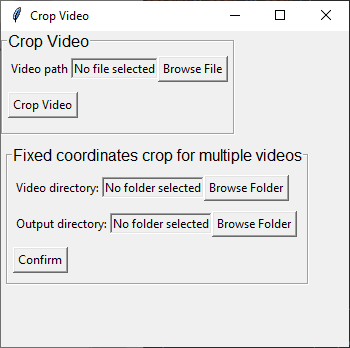

Video processing tools in SimBA
We have developed video and image processing tools and incorporated them into the overall SimBA pipeline. However, many of the tools are useful on their own or in “one-off” situations. To make these easily accessible, the tools have been incorporated into their own space within the GUI, and are described below.

Shorten Videos
This is a tool used to trim video lengths. The tool contains two different methods: Method 1 and Method 2.
Method 1
Use Method 1 to trim both the beginning and the end of the video.
Let’s say we have a 2 minute long video and we want to get rid of the
first 10 seconds, and the last 5 seconds. We would start our video on at
00:00:10, and end the video at 00:01:55.
First, click on
Browse Fileto select the video to trim.Enter the start time in the
Start at:entry box, in this case it will be 00:00:10Enter the end time in
End at:entry box, in this case it will be 00:01:55. The settings should look like the image below.

Click
Cut Videoto trim the video and a new shorter video will be generated. The new shorter video will have a name of Name of original video + *_shorten* and will be located in the same folder as the original video.
{kind=link}
Method 2
Method 2 cuts of the beginning of the video.
Let’s say we have a 2 minute long video and we want to get rid of the first 20 seconds from the start of the video.
Enter the amount of time that needs to be trimmed from the start of the video in
Seconds:, in this case it will be 20

Click
Cut Videoto trim video and a new shorten video will be generated, the new video will have a name of Name of original video + *_shorten* and will be located in the same folder as the original video.
Clip video into multiple videos
This tool can help users to cut the videos into multiple clips/section.
Click on the
Clip video into multiple videosfrom theToolssection.

Select the video that you want to split/clip by clicking
Browse File
{kind=link}
Put in the number of output clips/sections that you want in
# of clips, and clickConfirm. Please note that if you put in the wrong number the first time, you can re-enter the number and clickConfirmto change the table.
{kind=link}
Then enter the
Start TimeandStop Timein the following format HH:MM:SS. For example, for a minute and 20 seconds it will be 00:01:20.Once the table has been filled, click
Clip videoand the video will be output on the same folder path/ directory of your original video.
Crop Video
This is a tool to crop videos.
First, click on
Browse Fileto select a video to crop.Click on
Crop Videoand the following windowSelect ROIwill pop up.Use your mouse to Left Click on the video and drag the rectangle bounding box to contain the area of the video you wish to keep. You can always left click and drag on the video to recrop your video
Hit
Entertwice and SimBA will crop the video. The new video will have a name of Name of original video + *_cropped* and will be located in the same folder as the original video.
Fixed Crop Videos
This tool allows the user to crop once and apply the same dimension to the rest of the videos in the folder.
{kind=link}
Under
Video directory, select the input video folder by clickingBrowse Folder.Then, select an output folder.
Click on
Confirmand an image will pop up, use your mouse to Left Click on the video and drag the rectangle bounding box to contain the area of the video you wish to keep. You can always left click and drag on the video to recrop your videoHit
Entertwice and SimBA will crop all the videos in the folder with the same coordinate. The new videos will have a name of Name of original video + *_cropped* and will be located in the output folder.
Multi-crop videos
This is a tool to used to multi-crop videos. For example, if you recorded four different environments with a single camera, you can use this tool to split single recordings into 4 different videos. This tool operates on all videos in a folder that is defined by the user. The user is required to draw the number of defined rectangles on each of the videos in the specified folder.
First, click on Multi-crop and the following menu will pop-open:

Next to Video Folder, click on
Browse Folderand select a folder containing the videos you which to multi-crop.Next to Output folder, click on
Browse Folderand select a folder that should house the cropped output videos.Next to Video type, type the file format of yout input videos (e.g., mp4, avi etc).
Next to # of crop, type in the number of cropped videos you wich to generate from each single input video (e.g., 4). Click on Crop to proceed. When you click on Crop, the first frame of the first video in the specified folder will be displayed, and the name of the video and rectangle number is printed overlaid:
|alt-text-1| 6. Left click the mouse and drag from the top left corner
to the bottom right corner of the first video you wish to generate. When
finished with the first video, press Enter. Repeat this step for the
next videos you wish to generate from Video 1. Once Video1 is complete,
repeat these steps for all the videos in the user-specified Video
Folder.
The cropped output videos will be located in the user-defined Output folder as defined in Step 3.
Downsample video
This is a tool to downsample a video into smaller size and reduce the resolution of the video.
The downsample video tool has two options: Customize Resolution and Default Resolution.
Customize Resolution
Use this tool to downsample video into any height and width.
First, click on
Browse Fileto select a video to downsample.Then, enter any values in the
HeightandWidthentry boxes.Click on
Downsample to custom resolutionto downsample the video. The new video will have a name of Name of original video + *_downsampled* and will be located in the same folder as the original video.
Default resolution
This tool allows the user to downsample a video quickly.
First, click on
Browse Fileto select a video to downsample.Tick on one of the resoltion options.
Click on
Downsample to default resolutionand the video will downsample into the selected resolution. The video will be located in the same folder as the original video.
Get Coordinates (calibrate distance)
This tool is to get the length (millimeter) per pixel of a video.
Let’s say we want to find out the metric length per pixel of a video of a mouse in a cage, and we know the width of cage is 130 millimeters (it’s a tight one).
First, click on
Browse Fileto select a video.Enter 130 in the
Known length in real life(mm)entry box.Click on
Get Distance, and the following window will pop up.
Note
When the frame is displayed, it may not be shown at the correct aspect ratio. To fix this, drag the window corner to the correct aspect ratio.
Use your mouse to double Left click at the left side of the cage and double Left click again on the right side of the cage. These are the known distance of 130 mm.
Note
You can double click any point again to change the location of the point.
Once two points are selected, hit
Escbutton. The millimeter per pixel value is printed in the main SimBA interface.
Change formats
This menu includes Change image formats and Change video formats
Change image formats
This tool allows the user to select a folder containing multiple images and convert the formats.
Click on
Browse Folderto select a folder that contains multiple images.Choose the original format of the images in the selected folder.
Choose the desired output image format.
Click on
Convert image file format.
Change video format
This tool allows the user to convert the file format of a single or multiple videos.
Convert multiple video file formats
Click on
Browse Folderto select the directory that contains the videos that you want to convert.Enter the original file format (eg: mp4, flv, avi etc.) in the
Input formatentry box. Note: do not put dots (‘.’) in the file format name (eg: mp4 or flv, etc).Enter the desired output format in the
Output formatentry box .Click on
Convert multiple videos.
Convert single video file format
Click on
Browse Fileto select a video to convert.Choose one of the following
Convert .avi to .mp4orConvert mp4 into Powerpoint supported formatClick on
Convert video format.
CLAHE enhance video
Click on
Browse Fileand select a video file.Click
Apply CLAHE. The new video will have a name of CLAHE_ Name of original video. The new file will be in a .avi format will be located in the same folder as the original video.
Superimpose frame numbers on video
This tool creates a video with the frame numbers printed on top of the video.
Click on
Superimpose frame numbers on videoand a new window will pop up.Select a video and click on
Open.The new version of the video will be created with the name Name of original video + *_frame_no* and will be located in the same folder as the original video.
Convert to grayscale
Click on
Convert to grayscaleand a new window will pop up.Select video and click
Open.The new greyscale version of the video will be created and have the name Name of original video + *_grayscale*. The new video will be located in the same folder as the original video.
Change FPS (frame-rate) of videos
Change FPS of a single video
Click on
Tools->Change fps->Change fps for single videoand a new pop up window is displayed.Click on
Browse Fileand select the video you want to change the FPS for.In the
Output FPSentry-box, enter the FPS of the new video as a number (e.g.,15).Click the
Convertbutton. A new video is saved in the directory of the input video with thefps_15filename suffix.
Change FPS of multiple videos
Click on
Tools->Change fps->Change fps for multiple videosand a new pop up window is displayed.Click on
Browse Folderand select the directory containing the videos you want to change the FPS for.In the
Output FPSentry-box, enter the FPS of the new videos as a number (e.g.,15).Click the
Convertbutton. New videos are saved in the directory of the input videos with thefps_15filename suffix.
Create path plots
Use this tool to create a path plot videos from raw pose-estimation data files.

Click on
Browse Filenext toVIDEO PATHand select the video file used to create the pose-estimation data (this is needed get and apply the correct fps and resolution of the output video).Click on
Browse Filenext toDATA PATHand select the raw output pose-estimation data from the video file (e.g., a DLC-generated H5 or CSV file).In the
BODY-PARTentry-box, enter the body-part (e.g., Nose) you which to represent the location of the animal in the path plot video.In the
BACKGROUND COLORdrop-down, select the color you which to represent the background in the path plot video.In the
LINE COLORdrop-down, select the color you which to represent the path of your animal in the path plot video (NOTE: make sure background and line colors are not identical).In the
LINE THICKNESSdrop-down, select the thickness of the lines you which to represent the path of your animal in the path plot video.In the
CIRCLE SIZEdrop-down, select the size of the circle which represent the current location of the animal in the path plot video.Click on
CREATE PATH PLOT VIDEO. A new path plot video is created in the same directory as the input video with theline_plotfile name suffix.

Merge images to video
Click on
Browse Folderto select a folder containing multiple frames.Enter the input image format of the frames. Eg: if the image name is Image001.PNG, enter PNG in the
Image formatentry box.Enter the desire output video format. Eg: if the video should be in .mp4 file format, enter mp4 in the
Video formatentry box.Enter the desire frames per second in the
fpsentry box.Enter the desired bitrate for the video in the
Bitrateentry box.Click on
Merge Imagesto create the video.
Generate gifs
Click on
Browse Fileand select a video to convert to a GIF.Enter the starting time of the GIF from the video in the
Start times(s)entry box.Enter the duration of the GIF in the
Duration(s)entry box.Enter the size of the GIF in the
Widthentry box. The output GIF will be scale automatically.Click on
Generate gifto create the gif.
Extract Frames
The Extract frames menu has two options: Extract defined frames, Extract frames, and Extract frames from seq files.
Extract defined Frames
This tool allows users to extract frames from a video by inputting specific start- and end-frame numbers. This is useful if you want to extract a subset of frames from a larger video, without first needing to generate a new video of the desired length.
Click
Browse Fileto select a video.Enter the starting frame number in the
Start Frameentry box.Enter the ending frame number in the
End Frameentry box.Click on
Extract Framesto extract the frames from theStart Frameto theEnd Frame.A folder with the video name will be generated and the all the extracted frames will be located in the folder. The frames will be in .png file format.
Extract frames
Use this tool to extract every frame from a single video or multiple videos.
Single video
Click on
Browse Fileto select a video file.Click on
Extract Frames(Single video)to extract every frame from the video.A folder with the video name will be generated and the all the extracted frames will be located in the folder. The frames will be in .png file format.
Multiple videos
Click on
Browse Folderto select the folder with videos.Click on
Extract Frames(Multiple videos)to extract every frame from the video.Folders with the video name will be generated and the all the extracted frames will be located in the folders. The frames will be in .png file format.
Extract frames from seq files
Use this tool to extract all the frames from a video in seq file format.
Click on
Browse Fileto select a video.Click on
Extract All Framesto extract all the frames from the video.A folder with the video name will be generated and the all the extracted frames will be located in the folder. The frames will be in .png file format.
Convert . seq files to .mp4 files
Use this tool to convert .seq files to .mp4 files.
Click on
Tools, thenChange formats, and click onChange .seq to .mp4.A window will pop up and you can then navigate and select the video folder that contains the mp4’s.
The conversion progress can be followed through the progress bar printed in the terminal window.
Re-organize tracking data
Use this tool to re-order the pose-estimation tracking data of multiple
files in a folder. For example, you may have some pose-estimation
body-part tracking files where the Animal_1_nose is body-part number
1, and some other pose-estimation body-part tracking files where
Animal_1_tail_base is body-part number 1. Now you want to re-order
the data so that all files contains the same order of tracked
body-parts.
Click on
Tools, thenRe-organize Tracking Data.In the entry box
Data Folder, select the directory containing your pose-estimation tracking files.Select your pose-estimation tool in the
Tracking Tooldrop-down menu.Select the file-format of your tracking data in the
File Typedrop-down menu.Click
Confirmand the following menu below will pop open. If you have one animal in your tracking data, the menu on the left will show. If you have multiple animals in your tracking data, the menu on the right will show. The image on the right contains an extra column compared to the image on the left, representing the Animal name.

The
Current Ordersub-menu on represents the column order of the input files. TheNew Ordersub-menu on represents the order which the body-parts should be re-ordered to. Use the drop-down menus to select the new order of the body-parts, then click onRun re-organization.Your new, re-organized files will be saved in a date-time stamped folder inside the
Data Folderselected in Step 2. The new folder will be named something likeReorganized_bp_20210726111127.
Remove body-parts from tracking data
Use this tool to delete user-specified body-parts from pose-estimation tracking data for all files in a folder. For example, you may have pose-estimation body-part tracking files for 16 body-parts, but now you want to get rid of the data for 2 body-parts and keep the other 14.
Click on
Tools, thenRemove body-parts from tracking data.In the entry box
Data Folder, select the directory containing your pose-estimation tracking files.Select your pose-estimation tool in the
Tracking Tooldrop-down menu.Select the file-format of your tracking data in the
File Typedrop-down menu.Select how many body-parts you like to remove from the pose-estimation tracking data files.
Click
Confirmand the following menu below will pop open (Note: if you have multiple animals in your pose-estimation files, you will also see a dropdown menu namedAnimal.) Select the body-parts you would like to remove, and clickRun Removal.

Your new files (with the removed body-parts) will be saved in a date-time stamped folder inside the
Data Folderselected in Step 2. The new folder will be named something likeReorganized_bp_20210726111127. You can now go ahead and import the files into your SimBA project.
Visualize pose estimation in folder
Use this tool to visualize the pose-estimation of all the files inside a SimBA project directory. This tool can be useful when you have interpolated and/or smoothened your pose-estimation data at import, and now you want to visualize the results of that interpolation and smoothing.
Click on
Tools, thenVisualize pose-estimation in folder....In the
Input directory (with csv/parquet files)menu, click bowse and select a folder that contain CSV or parquet files (e.g., theproject_folder/csv/input_csvdirectory of your SimBA project)In the
Output directory (where your videos will be saved)menu, click bowse and select a folder where your videos should be saved (I recommend to choose an empty folder or create a new folder).In the
Circle sizeentry box, choose the size of the circles denoting the location of your body-parts (e.g.,5)OPTIONAL: If you want to manually set the colors for each of the animals, click on
OPEN ADVANCED SETTINGSand choose the number of animals in your data file. Then use the dropdown menus to set the color of each animal. If you do not set the animal colors using theADVANCED SETTINGSmenu, SimBA will automatically assign colors to each of the body-parts.Click on the
VISUALIZE. You can follow the progress in the main SimBA terminal window.

Temporal join videos
Use this tool to join a single recording represented by multiple video files into a video file.
Click on
Tools, thenTemporal join videos.In the
INPUT DIRECTORY, click browse and select the directory holding your videos. >NOTE: The video files in the directory have to be sequantuall and numerically named in order for SimBA to know the order. E.g.,1.mp4,2.mp4…In the
INPUT FORMATdropdown, select the file format of the input videos.Click run. A new video file will be created inside the directory selected in Step 2 called
concatenated.mp4.
Rotate videos
At times, the camera made have been tilted during a recording which prevents accurate bounding-box cropping and/or messes with our classifiers and now we want to fix this.
To rotate videos, click
Tools, thenRotate videos.In
Save directory, select the directory where you want to store your rotated videos.To rotate several videos, select the directory where the videos live in
Rotate videos in directory. Alternatively, to rotate a single video, select the path to the video file inVideo path.Once selected, click the
Runbutton and the interface in the video below pops up. Use the left and right keyboard buttons to rotate the video to the left and right. Once happy, use theESCbutton to rotate and save the video in the directory chosen in Step 2.
Concatenate two videos
Use this tool to concatenate two videos into a single video.

In the
First video path, click onBrowseand select the first video.In the
Second video path, click onBrowseand select the second video.In the
Resolutiondrop-down menu, select the resolution of the output video. > Note 1: SelectVideo 1in theResolutiondrop-down menu to use the resolution of Video 1 as the resolution of the output video. > Note 2: SelectVideo 2in theResolutiondrop-down menu to use the resolution of Video 2 as the resolution of the output video.To vertically concatenate the videos, click the
Vertical concatenationradio-button. To horizontally concatenate the videos, click theHorizontal concatenationradio-button. The resolution choosen in Step 3 refers to the height or width depending on which type of concatenation (vertical vs horizontal).Click
Runto perform the concatenation. The file-path of the output video will be printed in the main SimBA terminal window (the file will be located in the same directory as theFirst video pathwith the_concat.mp4suffix.
Concatenate multiple videos
Use this tool to concatenate a user-defined number of videos into a single video mosaic of videos.

Begin by selecting how many videos you want to concatenate together in
the VIDEOS # drop-down menu and click SELECT. A table, with one
row representing each of the videos, will show up titled
VIDEO PATHS. Here, click the BROWSE FILE button and select the
videos that you want to merge into a single video.
Next, in the JOIN TYPE sub-menu, we need to select how to join the
videos together, and we have 4 options:
MOSAIC: Creates two rows with half of your choosen videos in each row. If you have an unequal number of videos you want to concatenate, then the bottom row will get an additional blank space.
VERTICAL: Creates a single column concatenation with the selected videos.
HORIZONTAL: Creates a single row concatenation with the selected videos.
MIXED MOSAIC: First creates two rows with half of your choosen videos in each row. The video selected in the
Video 1path is concatenated to the left of the two rows.
Finally, we need to choose the resolution of the videos in the
Resolution width and the Resolution height drop-down videos.
If choosing the MOSAIC, , VERTICAL, or horizontal join type, this is
the resolution of each panel video in the output video. If choosing
MIXED MOSAIC, then this is the resolution of the smaller videos in the
panel (to the right).
After clicking RUN, you can follow the progress in the main SimBA
terminal and the OS terminal. Once complete, a new output video with a
date-time stamp in the filename is saved in the the same directory as
the directory of the video selected as Video 1.
Print mode info
Use this tool to get the model information (e.g., number of features,
number of trees used to create a model) from a model .sav file in
SimBA.

Next to the
Model pathentry box, clickBrowseand navigate to a model classifier that you have created in SimBA (e.g., select theMyClassifier.savfile.Next, click
PRINT MODEL INFOand you should see the following information printed in the main SimBA terminal.

This information tells you how many trees the classifier uses, how many features the classifier expects, further model hyperparameter settings, and when the file was created etc.